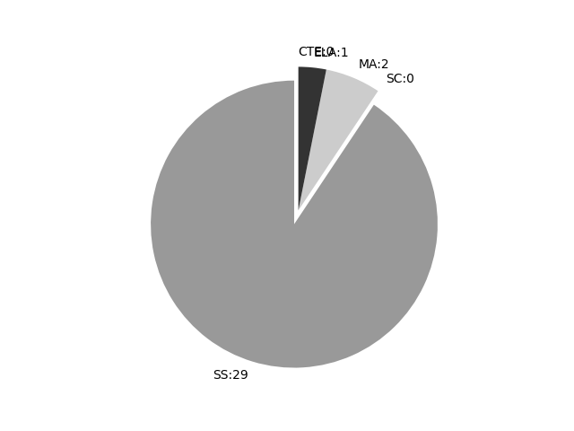

Vermont
Report date: 2021-07-08
The frequency of all keywords found in this state's standards: 32
Comparable state score: 1.075 (median: .303, SD: .324)
The frequency above is the sum of all keywords found in all of this state's four core academic standards and the state's CTE/career standards. This total count is broken down by keyword and discipline area below.
On this site, 'comparable scores' are calculated as: keywords found divided by total words in the standards document(s) - multiplied by 100,000. The comparable scores attempt to normalize data, accounting for very different sizes of curriculum guidance documentation.
Frequencies by keyword or phrase:- spatial: 25
- geographic information system: 1
- geospatial: 5
- GIS: 1

Frequencies by discipline area: - SS: 29
(Comp: 2.855) - SC: 0
(Comp: 0.0) - MA: 2
(Comp: 0.282) - ELA: 1
(Comp: 0.194) - CTE: 0
(Comp: 0.0)
Support files: Examples of keyword use by discipline area (and document): - ELA
- ADA_CC_ELAStandards.pdf, page:27, position:4345
to better understand each of the words.6.Acquire and use accurately grade-appropriate conversational, general academic, and domain- speciÞc words and phrases, including those that signal spatial and temporal relationships (e.g., After dinner
- MA
- ADA_CC_MathStandards.pdf, page:2, position:227
greater focus and coherenceMathematics experiences in early childhood settings should concentrate on (1)number (which includes whole number, operations, and relations) and (2)geometry, spatial relations, and measurement, with more mathematics - ADA_CC_MathStandards.pdf, page:8, position:1334
objects in combined sets, or counting the number of objectsthat remain in a set after some are taken away.(2)Students describe their physical world using geometric ideas (e.g.,shape, orientation, spatial relations) and vocabulary. They identify, name,a
- SS
- c3-framework-for-social-studies-rev0617.pdf, page:3, position:429
Global EconomyGEOGRAPHY........................................................................................................................................40Geographic Representations: Spatial Views of the WorldHuman-Environment Interaction: - c3-framework-for-social-studies-rev0617.pdf, page:5, position:2469
the knowledge and skills to be civic-ready before graduation. ˝e concepts expressed in the C3 Framework illustrate the disciplinary ideas, such as political structures, economic decision making, spatial patterns, and chronological sequencing, that hel - c3-framework-for-social-studies-rev0617.pdf, page:12, position:3239
and Democratic PrinciplesExchange and MarketsHuman-Environment Interaction: Place, Regions, and CulturePerspectivesProcesses, Rules, and LawsThe National EconomyHuman Population: Spatial Patterns and MovementsHistorical Sources and - c3-framework-for-social-studies-rev0617.pdf, page:17, position:791
environmental question such as fiWhat path should a new transcontinental pipeline take?fl or fiShould the pipeline be built at all?fl demands the use of economic, historical, and civic as well as spatial concepts and tools.With compelling and supportin - c3-framework-for-social-studies-rev0617.pdf, page:39, position:1224
reasoning requires using spatial and environmental perspec-tives, skills in asking and answering questions, and being able to apply geographic representations including maps, imagery, and geospatial tech-nologies. A spatial perspective is about wh - c3-framework-for-social-studies-rev0617.pdf, page:39, position:1058
of places and regions, the distribution of landforms and water bodies, and historic changes in political boundaries, economic activities, and cultures. Geographic reasoning requires using spatial and environmental perspec-tives, skills in askin - c3-framework-for-social-studies-rev0617.pdf, page:40, position:79
- c3-framework-for-social-studies-rev0617.pdf, page:40, position:1319
of familiar places.D2.Geo.1.3-5. Construct maps and other graphic rep-resentations of both familiar and unfamiliar places. D2.Geo.1.6-8. Construct maps to represent and explain the spatial patterns of cultural and environmental charac - c3-framework-for-social-studies-rev0617.pdf, page:40, position:27
- c3-framework-for-social-studies-rev0617.pdf, page:41, position:517
types of interactions that occur. Earth™s human systems and physical systems are in constant interaction and have reciprocal in˙uences ˙owing among them. ˝ese interactions result in a variety of spatial patterns that require careful observation, inve - c3-framework-for-social-studies-rev0617.pdf, page:42, position:313
are fundamental and active features on Earth™s surface. ˝e expansion and redistribution of the human population aˇects patterns of settlement, environmental changes, and resource use. ˝e spatial patterns and movements of population also relate - c3-framework-for-social-studies-rev0617.pdf, page:42, position:17
- c3-framework-for-social-studies-rev0617.pdf, page:43, position:669
changes with them. Humans have spread across the planet, along with their cultural practices, artifacts, languages, diseases, and other attributes. All of these interconnections create complex spatial patterns at multiple scales that continue to cha - c3-framework-for-social-studies-rev0617.pdf, page:43, position:33
- c3-framework-for-social-studies-rev0617.pdf, page:56, position:3790
Standards distinguish sources as print or digital, as visual, quantitative andor textual sources, and as primary or secondary sources. In social studies these distinctions are made man-ifest in spatial sources such as maps, quantitative information r - c3-framework-for-social-studies-rev0617.pdf, page:66, position:2616
arguments and claims that answer the sub-questions Cartography including using map symbol sys-tems, critical reading and thinking, capabil-ity of using statistics to represent spatial change, capability to use statistical and spa - c3-framework-for-social-studies-rev0617.pdf, page:67, position:619
theories show the way toward substan-tiating and justifying claims; adequacy judged within the community of peers, i.e., other economic investigatorsNarratives, statistical and spatial analyses, and representations point toward su - c3-framework-for-social-studies-rev0617.pdf, page:83, position:4339
period of recent economic struggle that saw incomes freeze or decline, unemployment increase, and capital markets contract. At the same time, it implies a set of supporting ques-tions around spatial proportion: was the impact of this recession fel - c3-framework-for-social-studies-rev0617.pdf, page:85, position:2755
human activity across the United States and other countries? To answer such questions requires prob-lem-solving strategies that entail spatial thinking, data gathering, and spatial analysis using geospatial data, maps, and other graphics. Research on geo - c3-framework-for-social-studies-rev0617.pdf, page:85, position:1969
Whereas to economists the recent recession is about causes, e˝ects, and solutions to slowing economic activ-ity, to geographic investigators it is about understanding and representing the spatial expressions of the events. Maps and other graphi - c3-framework-for-social-studies-rev0617.pdf, page:86, position:90
- c3-framework-for-social-studies-rev0617.pdf, page:103, position:3821
belief systems, or patterns of behavior that characterize a society or a culturally distinct social group.Example: Cultural characteristics are expressed in housing types, food preferences, spatial patterns of settlements, and beliefs about appro - c3-framework-for-social-studies-rev0617.pdf, page:105, position:538
the broader geographic context of the Colorado River watershed.Geographic data: Facts and statistics about spatial and environ-mental phenomena gathered for analysis. Example: Geographic or geospatial data may be gathered about physical and human - c3-framework-for-social-studies-rev0617.pdf, page:105, position:450
the immediate geo-graphic context of the arid and physically taxing Black Canyon and the broader geographic context of the Colorado River watershed.Geographic data: Facts and statistics about spatial and environ-mental phenomena gathered for analys - c3-framework-for-social-studies-rev0617.pdf, page:105, position:2301
technologies include technologies related to mapping and inter-preting physical and human features on Earth™s surface.Example: Geospatial technologies include global positioning systems [GPS], geographic information systems [GIS], remote sensing [RS], and geospatial visu - c3-framework-for-social-studies-rev0617.pdf, page:105, position:1966
with irrigation systems to sustain growing until harvest time. When soils are depleted from constant plantings, farmers may extend productivity by using no-till methods and adding fertilizers.Geospatial technologies: Computer hardware and so˙ware used - c3-framework-for-social-studies-rev0617.pdf, page:107, position:1468
journey). Both Ibn Battuta and Ibn Juzaay can be seen as the makers of this historical source.Map: A map is a representation of an area and is usually depicted on a ˛at surface. Maps describe spatial relationships of the speci˜c features represente - c3-framework-for-social-studies-rev0617.pdf, page:108, position:3655
and a dictatorship are di˝erent political systems.Population: A group of individuals that may change over time in its numerical size, age structure, gender structure, ethnic composition, and spatial distribution. Example: Each country has a popu - c3-framework-for-social-studies-rev0617.pdf, page:110, position:638
brothers to their father immediately a˙er the ˛ight, Vir-ginia and Ohio newspaper articles on the ˛ight, and a letter written by Orville three weeks a˙er the ˛ight.Spatial: Pertains to space and spatial relationships on Earth™s surface.Example: ˚e sc
{kind=link}